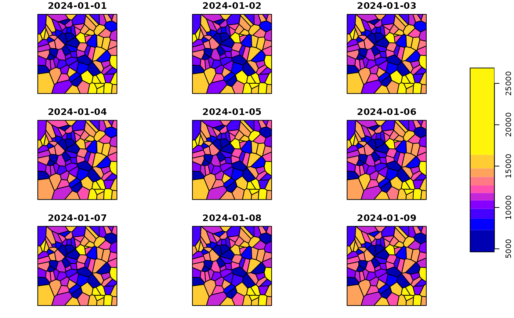

Spatio-temporal Binomial data
stbinom.RdA simulated stars object containing binomial response data with a functional clustering
pattern defined by polynomial fixed effects. This dataset includes the variables cases
and population observed across 100 simulated spatial regions over 91 time points.
Usage
data(stbinom)Format
A stars object with:
- cases
Number of observed cases (integer)
- population
Population at risk (integer)
- dimensions
Two dimensions:
geometry(spatial features) andtime(daily observations)
Examples
library(sfclust)
data(stbinom)
stbinom
#> stars object with 2 dimensions and 2 attributes
#> attribute(s):
#> Min. 1st Qu. Median Mean 3rd Qu. Max.
#> cases 4632 9295.0 11760.5 11903.97 14238.0 26861
#> population 10911 18733.5 24255.0 23814.57 27517.5 44829
#> dimension(s):
#> from to offset delta refsys point
#> geometry 1 100 NA NA NA FALSE
#> time 1 91 2024-01-01 1 days Date FALSE
#> values
#> geometry POLYGON ((59.5033 683.285...,...,POLYGON ((942.7562 116.89...
#> time NULL
plot(stbinom["cases"])
#> Warning: plotting the first 9 out of 91 attributes; use max.plot = 91 to plot all
